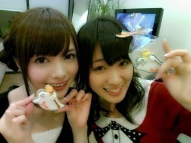
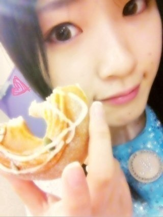
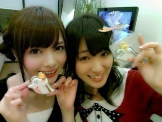
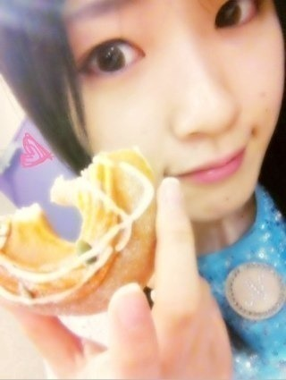

2012/1026Fri（´-`）.｡oO(かずみん×109
こんばんは(*^^*)
いつもコメントありがとうございます！
みなさんの文化祭のエピソードを
教えて下さりありがとうございました！
楽しそうなものばかりで、
みなさんの学校の文化祭
行きたいなぁと思いながら
コメントを読んでましたよ〜(*^_^*)
-----------
今日はZEPP東京で
ガールポップライブがありました！
来てくださったみなさん、
ありがとうございました(*^^*)
ZEPPはなんか独特の
雰囲気なんですよね！
それがガジ好きなんです(//∇//)
本当楽しかった＼(^o^)／
最後の抽選会で
みなさんがアメイジングをやって
くださって、
まさにアメイジングでした＼(^o^)／
嬉しすぎた(T_T)
飛び跳ねてしまいました！！！
本当にありがとうございました( ´ ▽ ` )
--------
そして大好きなスマイレージさん
からいただいた差し入れと(*^^*)

スマイレージさんの
"スキちゃん"が大好きなんです！
楽屋裏でずっと"大好き！"
とか
"スキちゃんスキちゃん○○がスキちゃん"
とコールしてました\(//∇//)\
ちなみに私は花音ちゃんファンです♪
この前もハロショで花音ちゃんの
生写真を買っちゃいました(^^)
スマイレージさん、
9nineさん、東京女子流さん、
Dancing Dollsさん、
素晴らしい方々と共演できて
嬉しかったです！！
今日は本当に勉強にもなったし、
いい思い出になりました！
ありがとうございました＼(^o^)／
またガールポップライブに出たいなぁ...！
明日の握手会も
よろしくお願いします(*^v^*)
それでは、おやすみなさい☆

アメイジング＼(^o^)／
いつもコメントありがとうございます！
みなさんの文化祭のエピソードを
教えて下さりありがとうございました！
楽しそうなものばかりで、
みなさんの学校の文化祭
行きたいなぁと思いながら
コメントを読んでましたよ〜(*^_^*)
-----------
今日はZEPP東京で
ガールポップライブがありました！
来てくださったみなさん、
ありがとうございました(*^^*)
ZEPPはなんか独特の
雰囲気なんですよね！
それがガジ好きなんです(//∇//)
本当楽しかった＼(^o^)／
最後の抽選会で
みなさんがアメイジングをやって
くださって、
まさにアメイジングでした＼(^o^)／
嬉しすぎた(T_T)
飛び跳ねてしまいました！！！
本当にありがとうございました( ´ ▽ ` )
--------
そして大好きなスマイレージさん
からいただいた差し入れと(*^^*)

スマイレージさんの
"スキちゃん"が大好きなんです！
楽屋裏でずっと"大好き！"
とか
"スキちゃんスキちゃん○○がスキちゃん"
とコールしてました\(//∇//)\
ちなみに私は花音ちゃんファンです♪
この前もハロショで花音ちゃんの
生写真を買っちゃいました(^^)
スマイレージさん、
9nineさん、東京女子流さん、
Dancing Dollsさん、
素晴らしい方々と共演できて
嬉しかったです！！
今日は本当に勉強にもなったし、
いい思い出になりました！
ありがとうございました＼(^o^)／
またガールポップライブに出たいなぁ...！
明日の握手会も
よろしくお願いします(*^v^*)
それでは、おやすみなさい☆

アメイジング＼(^o^)／
2012/10/26 23:42
コメント(347)
ガールポップ楽しかった！！！
会場全員がアメージングやったのは
すごい一体感だったね！！！
お疲れ様
アメイジングV(^_^)V
アメイジングV(^_^)V
お疲れぇー( ´ ▽ ` )ﾉ
アメイジング＼(^o^)／
アメイジング＼(^o^)／
ライブ楽しかった！
会場全体にアメイジング・ムーブメントを起こして、
なんか誇らしかったなぁ
横アリでもアメイジング！！
会場全体にアメイジング・ムーブメントを起こして、
なんか誇らしかったなぁ
横アリでもアメイジング！！
僕も「アメイジング」やりたかったな。
今後もアメイジング続けてね(笑)
今後もアメイジング続けてね(笑)
初コメです。
かずみん、東京女子力はダメよ 笑
予測変換、恐るべし。
かずみん、東京女子力はダメよ 笑
予測変換、恐るべし。
自分も参戦したよ！
アメイジング＼(^o^)／
会場の一体感が凄かったｗｗ
流行らせましょう！！
ライアン←
かぁーーずぅみぃーんんん！
俺もやっとく！
アメイジング＼(^o^)／
ブログ更新ありがとう。
ガジなかずみんも好きです。
ではまた。
かずみんの可愛さにアメイジング＼(^o^)／
明日行きたかったけど仕事・・・
我慢して４ｔｈで爆発じゃーーー！！！
かずみんもエア握手やってくれ（笑）
明日仕事頑張ります！
じゃ(^o^)ﾉ ＜ おやすみー
明日行きたかったけど仕事・・・
我慢して４ｔｈで爆発じゃーーー！！！
かずみんもエア握手やってくれ（笑）
明日仕事頑張ります！
じゃ(^o^)ﾉ ＜ おやすみー
みーたんばんちゃ(^O^)／
ゆーたんなう
Zepp行ったよ！
てか居たでしょヾ(＠゜▽゜＠)ノ
かずみ0ポジに(^O^)／
キラキラしてたよ！
楽しそうにパフォーマンスしてたよ！
湧いた湧いたラッシュで腰痛いわ(汗)orz
かずみアメイジング乱発しすぎだから(^O^)／
やばたんだわ(●^ー^●)
乃木坂のライブもっとやって欲しいわ(^ω^)
てか東京女子力でなく東京女子流だよ(汗)orz
横浜よろしくねん！
今日も1日お疲れちゃん
ぢゃぁ
(一実o^∀^o46)
↑
これ大事
ゆーたんなう
Zepp行ったよ！
てか居たでしょヾ(＠゜▽゜＠)ノ
かずみ0ポジに(^O^)／
キラキラしてたよ！
楽しそうにパフォーマンスしてたよ！
湧いた湧いたラッシュで腰痛いわ(汗)orz
かずみアメイジング乱発しすぎだから(^O^)／
やばたんだわ(●^ー^●)
乃木坂のライブもっとやって欲しいわ(^ω^)
てか東京女子力でなく東京女子流だよ(汗)orz
横浜よろしくねん！
今日も1日お疲れちゃん
ぢゃぁ
(一実o^∀^o46)
↑
これ大事
ライヴおもろかったなー
よかったでー
またしてねー
アメイジング！
おつかれさまー
今日も笑顔がキュートねぇ～
明日も頑張ってね
かずみんふぁいっとぉ～
今日も笑顔がキュートねぇ～
明日も頑張ってね
かずみんふぁいっとぉ～
こんばんは♪
今日のライブ見に行きました！！
めちゃんこ楽しかったです(*^^*)
会場皆でのアメイジング＼(^-^)／
最高でした(笑)
明日も頑張ってください(^-^)/
では、お休みなさい(-.-)Zzz・・・・
かずみんが他のアイドルで
高山ってたのみてたよ!!
アメイジングが流行るとは（笑）
俺も楽しかった!!
今日はお疲れ様です。
かずみんLiveお疲れさま!
今日見に行ったよ！！
抽選会の時のアメイジング＼(^o^)／楽しすぎたね
会場のアメイジング＼(^o^)／にはしゃいでたかずみん可愛すぎた笑
とても幸せな１日になりました。ありがとう！！
これからも楽しんで頑張って！！
今日見に行ったよ！！
抽選会の時のアメイジング＼(^o^)／楽しすぎたね
会場のアメイジング＼(^o^)／にはしゃいでたかずみん可愛すぎた笑
とても幸せな１日になりました。ありがとう！！
これからも楽しんで頑張って！！
こんばんは＼(^o^)／
ライブ
お疲れさん♪
乃木坂のライブ
行ってみたい(；∀；)
アメイジング大流行してるね！
俺も流行らそうかな(*^^*)笑
じゃ、おやすみ(´・ω・`)
盛り上がって良かったね
行きたかったな
行きたかったな
ガールズポップお疲れさま(*´ー｀*)
めっちゃ盛り上がったみたいだね～！
でも今日を通して更に成長できたんじゃないかな？
色んなアイドルから学ぶこともたくさんあると思うし！
アメイジングを会場全体がやってくれたのはほんと嬉しいね^^
俺も一緒に会場でやりたかった(笑)
明日の握手は４部から行くね
話しような～
私服も楽しみにしてる♪
めっちゃ盛り上がったみたいだね～！
でも今日を通して更に成長できたんじゃないかな？
色んなアイドルから学ぶこともたくさんあると思うし！
アメイジングを会場全体がやってくれたのはほんと嬉しいね^^
俺も一緒に会場でやりたかった(笑)
明日の握手は４部から行くね
話しような～
私服も楽しみにしてる♪
お疲れ様です！！
ライブ行きたかったー( ; _ ; )
みんなでアメイジングしたんですか！！俺もしたかったなー(>_<)
かずみんはほんとにアイドル好きなんですね(^ω^)
明日も頑張ってください！
おやすみなさい☆GOODNIGHT☆
ライブ行きたかったー( ; _ ; )
みんなでアメイジングしたんですか！！俺もしたかったなー(>_<)
かずみんはほんとにアイドル好きなんですね(^ω^)
明日も頑張ってください！
おやすみなさい☆GOODNIGHT☆
お疲れ様です(>_<)
かずみんわ○○のところ何て入れてたんですか？
花音ちゃん推し被りなw
今日見て花音ちゃんに決めた←
今日見て花音ちゃんに決めた←
オツカレサマー！
楽しかったよ。
「アメージング」が、浸透してきてうれしいですねー‼
個別も楽しく過ごせるとイイですね。
楽しかったよ。
「アメージング」が、浸透してきてうれしいですねー‼
個別も楽しく過ごせるとイイですね。
/(^o)/アメイジング
明日頑張ってください。
残念ながら、仕事のため、いけませんT.T
群馬県に生活しているインドネシア人より
明日頑張ってください。
残念ながら、仕事のため、いけませんT.T
群馬県に生活しているインドネシア人より
かずみん こんばんは (*^o^*)
GiRLPOPライブおつかれさま ( ´ ▽ ` )ﾉ
アメイジング大流行してるね＼(^o^)／
この前の なぁちゃん のブログでは
なんか宗教みたいになってたし 笑
大好きなアイドルさんとの共演は
学ぶこともたくさんあるだろうし
なにより かずみん 自身が楽しめたみたいでよかったね♪
明日は握手会！
楽しんできてね ( ^_^)/~~~
かずみんおつかれ ！！
GIRL POPおつかれさまいやん(o^_^o)
楽しんでたようで
うらやま～←
そう俺は行けてないねん！
俺のなかではその写メの可愛さがアメイジング＼(^o^)／
明日も元気に行こう！(((o(*ﾟ▽ﾟ*)o)))
さかちょん
今日みにいったよー！
気づいとらんわな。笑
楽しかったよ！！
そして、かずみんの生歌(^-^)聞けてうれしかった！
最後のアメイジングも楽しかったし(^_^)v笑
また、明日あいにいくねー！
塩対応よろしく！笑
気づいとらんわな。笑
楽しかったよ！！
そして、かずみんの生歌(^-^)聞けてうれしかった！
最後のアメイジングも楽しかったし(^_^)v笑
また、明日あいにいくねー！
塩対応よろしく！笑
お疲れ様でした！
アメイジング、かなりの浸透率じゃないですか！
ZEPPは何度かバンドを観に行きましたが、
綺麗でいいとこですよね！！
あれ？東京女子流さんですよ？
ちゃんと疲れとってねー！！
アメイジング、かなりの浸透率じゃないですか！
ZEPPは何度かバンドを観に行きましたが、
綺麗でいいとこですよね！！
あれ？東京女子流さんですよ？
ちゃんと疲れとってねー！！
かずみんみん蝉!!
スランプ脱出したかな？
＼(☆o☆)／ァメイジング
今日の写メ、ムチャムチャ可愛いね(o^∀^o)
今日もポジティブ!!
Baiponε=ε=┏( ・_・)┛タカポン
スランプ脱出したかな？
＼(☆o☆)／ァメイジング
今日の写メ、ムチャムチャ可愛いね(o^∀^o)
今日もポジティブ!!
Baiponε=ε=┏( ・_・)┛タカポン
一実ちゃんかわいい♡
かわいすぎるよ～♡
私もスマイレージ好きっ♡
ちなみに私はあやちょ推しです♡
スキちゃん好き！！！
あと、あすはデートなのに今すぐ声が聞きたいとか
有頂天LOVEも好きだなあ♡
今日はゆっくり休んでね♪
かわいすぎるよ～♡
私もスマイレージ好きっ♡
ちなみに私はあやちょ推しです♡
スキちゃん好き！！！
あと、あすはデートなのに今すぐ声が聞きたいとか
有頂天LOVEも好きだなあ♡
今日はゆっくり休んでね♪
お疲れ＼(^o^)／
明日いくよー！
ても一枚しかないから残念！
でも楽しみでーす(^O^)／
明日いくよー！
ても一枚しかないから残念！
でも楽しみでーす(^O^)／
べーーーーーい！！！
かずみんこんばんは(^O^)
今日のZepp Tokyo行ったぜぜぜぜぜぜぜー♪
というわけでいたよwww
前から3列目のとこw
全力でアメージングしてました
かずみん最高だね☆彡
明日もよろしくね！！！
それじゃあべいべいべーーーーーい！！！
お疲れさま♪
ライブ楽しそういいなー！
かずみさんがいま、一番行きたいライブある？
自分はスパガスパガー♪
最近はまりんちゅ(笑)
今日も握手会あるしね！
かずみん明日も頑張ってー！
じゃあまたね。
写真可愛い(〃ω〃)
かずみん、こんばんは!!
アメイジングポーズ皆で共有したいなぁー。
ハピMのライブでもやっちゃおうよ!!横アリでアメイジングだよ!!俺もハピMのライブ参戦するから、やった時は全力でアメイジングさせて頂きます＼(^-^)／
いささかアメイジングでもいいよ＼(^-^)／←
アメイジングポーズ皆で共有したいなぁー。
ハピMのライブでもやっちゃおうよ!!横アリでアメイジングだよ!!俺もハピMのライブ参戦するから、やった時は全力でアメイジングさせて頂きます＼(^-^)／
いささかアメイジングでもいいよ＼(^-^)／←
（´v`）.｡oO(えりひか×４１０
一実、こんばんは。
高山一実Familyの「えりひか」です。
もう、寝ちゃったかな？
LiVE GiRL POP Vol.1～Colorful～
良かったですよ。
ライブも良かったけど、抽選会も
楽しかったね（笑）
出演者と全てのファンが、アメイジングポーズ！
これは、きっと忘れられないよね。
そういえば、わたしを見つけてくれましたか？
２階席中央最後列で、ピンクの一実うちわを
振って、ライトをチカチカさせながら、応援して
いましたよ。
「かずみー！！かずみー！！」って叫んでいました。
明日の、握手会で聞いてみようかな？
興奮が醒めない夜ですが、そろそろお休みの時間です。
ゆっくり休んで、今日の疲れをとってくださいね。
では、今夜も夢で逢いましょう。
おやすみなさい・・・。ってちょっと待った！
東京女子力 ⇒ 東京女子流だよ・・・。
おやすみなさい・・・。
一実、こんばんは。
高山一実Familyの「えりひか」です。
もう、寝ちゃったかな？
LiVE GiRL POP Vol.1～Colorful～
良かったですよ。
ライブも良かったけど、抽選会も
楽しかったね（笑）
出演者と全てのファンが、アメイジングポーズ！
これは、きっと忘れられないよね。
そういえば、わたしを見つけてくれましたか？
２階席中央最後列で、ピンクの一実うちわを
振って、ライトをチカチカさせながら、応援して
いましたよ。
「かずみー！！かずみー！！」って叫んでいました。
明日の、握手会で聞いてみようかな？
興奮が醒めない夜ですが、そろそろお休みの時間です。
ゆっくり休んで、今日の疲れをとってくださいね。
では、今夜も夢で逢いましょう。
おやすみなさい・・・。ってちょっと待った！
東京女子力 ⇒ 東京女子流だよ・・・。
おやすみなさい・・・。
ライブお疲れ様でした～＼(^o^)／
アメイジングはもうかなり浸透してるみたいですね（＾∇＾）
これから他のバンドやアイドルのいいところをどんどん吸収して、乃木坂が、かずみんが、もっと成長してくれる事を期待してます(＠⌒ー⌒＠)
これからも頑張って下さいね！
応援してます( ´ ▽ ` )ﾉシ
アメイジングはもうかなり浸透してるみたいですね（＾∇＾）
これから他のバンドやアイドルのいいところをどんどん吸収して、乃木坂が、かずみんが、もっと成長してくれる事を期待してます(＠⌒ー⌒＠)
これからも頑張って下さいね！
応援してます( ´ ▽ ` )ﾉシ
女子流とかスマイレージを目当てにきた友達も、アメイジングを気に入ってくれてたよw
俺も、乃木坂発のネタが他アイドルまで広まって嬉しかったな
俺も、乃木坂発のネタが他アイドルまで広まって嬉しかったな
お初です♪
アメイジング楽しかったからついコメントしたくなっちゃった(笑)
いや～めっちゃ楽しかった♪
特にアメイジング(笑)
アメイジングの力は凄いね＼(^^)／
じゃまたねー！
…東京女子流だよ(笑)
アメイジング楽しかったからついコメントしたくなっちゃった(笑)
いや～めっちゃ楽しかった♪
特にアメイジング(笑)
アメイジングの力は凄いね＼(^^)／
じゃまたねー！
…東京女子流だよ(笑)
ガールポップいったよー
乃木坂一番盛り上がり凄かったねー
会いたかったかもしれないの時のかずみんが凛々しくてハッ！としたよ
パフォーマンスは前の方で見てたんだけど、出番が終わってドリンク買いに行ってあとは後ろの方で見てたんだー
そしたら抽選会でまさかのアメイジング祭りｗ
前に残ってれば良かった
乃木坂一番盛り上がり凄かったねー
会いたかったかもしれないの時のかずみんが凛々しくてハッ！としたよ
パフォーマンスは前の方で見てたんだけど、出番が終わってドリンク買いに行ってあとは後ろの方で見てたんだー
そしたら抽選会でまさかのアメイジング祭りｗ
前に残ってれば良かった
お疲れ！
ガールポップ
行ったよ！
最高に
上がるぅぅぅう高まるぅぅぅうだった笑
てか
最後
かずみんの独壇場！
アメージング！！爆笑
俺もずってやってたよ笑
ではでは。
明日も1日がんばりまいやん！！
ガールポップ
行ったよ！
最高に
上がるぅぅぅう高まるぅぅぅうだった笑
てか
最後
かずみんの独壇場！
アメージング！！爆笑
俺もずってやってたよ笑
ではでは。
明日も1日がんばりまいやん！！
ZEPP東京行きたかったわー(ToT)
てか明日の握手会も行かれへん～(>_<)
この頃かずみ不足でバタンキューしそうや～(笑)
早く次の個握の日にならんかなー？
一実にいち早く会いたいわ～//
一実のことガヂLOVEやわ～(*^ω^*)
てか今日のおれのコメント何!?(笑)
キモすぎww
んじゃまたコメントするわな♪
一実おやすみ(-.-)Zzz・・・・
明日の握手会頑張って
高山一実=一生推し
高山一実=一生推し
アメイジング♪ヽ(´▽｀)/
かずみんへ
ライブお疲れ様でーす
このライブには乃木坂以外にもたくさんのアイドルが出ていたみたいですごい楽しかったですね 僕も行きたかったです
僕も行きたかったです
ぜひ今度の握手会には行きたいと思います
ライブお疲れ様でーす
このライブには乃木坂以外にもたくさんのアイドルが出ていたみたいですごい楽しかったですね
ぜひ今度の握手会には行きたいと思います
ガールポップライブすごく行きたかった(>_<)
握手会行くのでよろしくお願いします&iF8F6;
握手会行くのでよろしくお願いします&iF8F6;
かずみん、こんばんわ～！
(^^)/
携帯故障につきコメント出来なくてゴメンチャイ(汗)
代替え機種にてコメントしてるけど、使いづらくて参るよ
(^_^;)
で、ライブお疲れちゃんね！ハロプロ好きなかずみんにはスマイレージと共演出来て良かったね！
で、会場の人達とアメイジングポーズやったらしいじゃん！良い経験出来たね！俺もその場に居たかったなぁ！
明日の個別も楽しんでな～！
じゃ、今日も１日お疲れちゃんね！
またね！
ポジティブsay！
P.S."東京女子力"になってるよ！(笑)
(^^)/
携帯故障につきコメント出来なくてゴメンチャイ(汗)
代替え機種にてコメントしてるけど、使いづらくて参るよ
(^_^;)
で、ライブお疲れちゃんね！ハロプロ好きなかずみんにはスマイレージと共演出来て良かったね！
で、会場の人達とアメイジングポーズやったらしいじゃん！良い経験出来たね！俺もその場に居たかったなぁ！
明日の個別も楽しんでな～！
じゃ、今日も１日お疲れちゃんね！
またね！
ポジティブsay！
P.S."東京女子力"になってるよ！(笑)
東京女子流な！
女子力じゃ某超絶少女の持ち歌に
なってしまうからｗｗ
しかし今日のライブ楽しかった！
埋もれてたからかずみんあんまり
見えなかったけど(^_^;)
しかし最後のアメイジングラッシュ
すごかったね！
他のアイドルヲタさん達もやって
くれててちょっと感動した！
今日あまりかずみん見られなかった
分は明日の握手会で見ることにする
からよろしくね(^^)
今日も１日お疲れさん♪
明日も１日ふぁいっとぉ～＼(^o^)／
おやすみ☆ミ
女子力じゃ某超絶少女の持ち歌に
なってしまうからｗｗ
しかし今日のライブ楽しかった！
埋もれてたからかずみんあんまり
見えなかったけど(^_^;)
しかし最後のアメイジングラッシュ
すごかったね！
他のアイドルヲタさん達もやって
くれててちょっと感動した！
今日あまりかずみん見られなかった
分は明日の握手会で見ることにする
からよろしくね(^^)
今日も１日お疲れさん♪
明日も１日ふぁいっとぉ～＼(^o^)／
おやすみ☆ミ


明日も頑張ってね！
北海道のだい